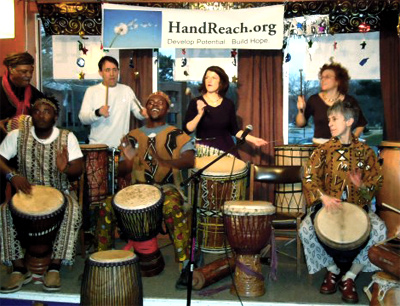
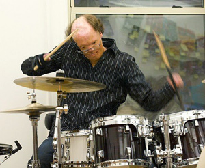
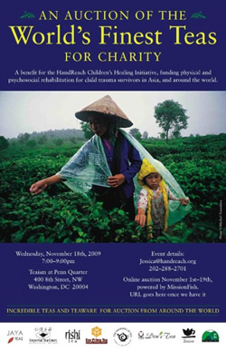

Past Events
Gala Charity Ball featuring the Akoma Drummers and The Galt Line!
New Deal Cafe: 133 Centerway, Greenbelt, MD Sunday, January 4th, 2011, 4:00-8:00pm
The Akoma Drummers are a group of percussionists, singers and dancers led by DC drumlady Kristen Arant and talented Ghanaian drummer Michael "Kweku" Owusu. The group formed in the spring of 2010 when Kristen and Kweku brought their best friends and students together for a weekly jam. Since then the group has performed at a dozen events, bringing a spirit of love and unity. The Akoma Drummers dip from the well of origins, from West African Mandingue and Ga to funk and DC's own go-go.A big thank you to Kristen, Kweku, The Galt Line, and the New Deal Cafe- we raised $820 for HandReach in the midst of some truly incredible drumming!
The Galt Line is a rootsy DC-based swing duo with wide-ranging influences that include RnB, Rockabilly, Western Swing, Jump Blues, and Gypsy Jazz. They have forged a sound that embraces music history without sounding antiquated.
The Akoma drummers proudly study and present music of the African diaspora - the origin of all people and all music. Our music ranges from traditional West African to funk and DC's own go-go. We play djembe, kpanlogo, conga and dun-un drums, and spice our compositions with percussion, dancing and songs. AKOMA describes the Adinkra symbol that represents THE HEART. Adinkra is an ancient symbolic language of West Africa, and THE HEART represents patience and tolerance. This concert will benefit "Drumming Up From Poverty."
To learn more about this event:
Akoma Drummers on Facebook

Burn-Injured Drummer Sends Youth to China with the Gift of Fire!
Washington Very Special Arts Society: 1100 16th Street, NW, Washington, DC Thursday, June 17th, 2010, 7:00-9:00pm
On Thursday, June 17th, the amazing New Orleans drummer Dan Caro, who was burned all over his body at age 2, kicked off his East Coast tour in Washington DC, headlining an event for HandReach to support our youth Beat Brigade and world-class medical team, who offered China's first Burn Camp in Beijing and Changsha this summer.
As a burn survivor who knows the healing power of drumming from personal experience, Caro offered a short talk and drumming performance at the event, and was available to sign copies of his new book, The Gift of Fire. A video presentation, live music, drinks, hors d'oeuvres and an auction of Chinese "peasant paintings" (colorful scenes depicting themes from the lives of Chinese farmers) directly benefited HandReach's healing and rehabilitative work in China and around the world.
Executive Director, Dr. Brecken Chinn Swartz explained HandReach's commitment to psychosocial care and therapeutic drumming: "All of us, no matter who we are, have survived trauma, some more visible than others. Drumming together takes us out of our eyes and more fully into our bodies to experience a powerful space of healing and acceptance that we hope to be able to share around the globe."
To learn more about Dan, and to see how he is a life-changing role model, please visit: www.dancaro.com

Auction of the World's Finest Teas
Teaism: Penn Quarter, 400 8th Street NW, Washington, DC November 18, 2009, 7:00 - 9:00 P.M
HandReach's first annual tea auction benefited the Children's Healing Initiative, an international medical project working to develop infrastructure supporting the treatment of young trauma survivors in tea-producing regions of the world.
The event featured appearances by luminaries from the international tea community, fabulous live music, sampling of some of the world's finest teas, cocktails and light refreshments, and a chance to network with extraordinary people from all over the world.
All proceeds from the event supported bringing expertise and resources to provide world-class acute, reconstructive, and psychosocial care for child survivors of debilitating trauma injuries for whom needed medical care is out of reach.
Auction participants went home that night with unique and extraordinary auction items, tax deductible contributions, and the knowledge that their generosity will provide a brighter future for children in the developing world otherwise limited by debilitating injuries.